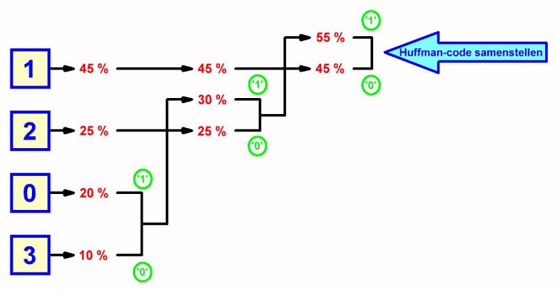

Compressie
Afbeelding, geluidsbestanden en video's bestaan uit veel detail, dit zijn dan ook grote bestanden die veel tijd kosten om te downloaden en nog eens veel data kosten om te downloaden. De oplossing hiervoor is datacompressie. Datacompressie maakt deze bestanden kleiner, waardoor de bestanden minder data kosten om te downloaden en minder opslag inneemt. Er bestaan twee soorten vormen van datacompressie, Lossy compression en Lossless compression.

Lossy compression verandert en verwijdert de orginele informatie van een bestand waardoor het bestand kleiner wordt. Kleine details binnen het bestand worden hierdoor verwijdert. JPEG wordt altijd gebruikt op je telefoon op foto's die je opslaat.
Lossless compresion aan de andere kant past niks aan op de orginele informatie van het bestand. Bij Lossless compression worden meerder pixels verkleint in één pixel die de informatie weergeeft van alle andere pixels, zoals vier pixels met de waarde 10, wat dan zou worden opgeslagen als (10,10,10,10). Door Lossless compression zou dit (4,10) worden. Lossles compression wordt dan ook bij grotere bestanden toegepast. Bij Lossless compression kan dit weer terug naar het orginele worden aangepast, al kan dit niet bij Lossy compression omdat daar informatie wordt verwijdert.